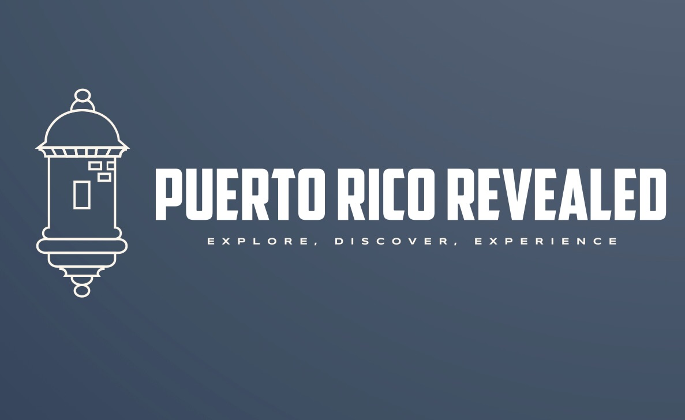

Our Vision
We envision a Puerto Rico where travelers can immerse themselves in the island's rich culture, explore its diverse landscapes, and connect with its vibrant communities. Through our platform, we aim to reveal the lesser-known treasures of Puerto Rico, offering authentic experiences that go beyond conventional tourism.
Our Purpose
Our purpose is to inspire and empower travelers to discover the true essence of Puerto Rico. By highlighting off-the-beaten-path destinations and local eateries, we strive to foster sustainable tourism practices that benefit both visitors and the local communities. We are committed to promoting responsible travel and preserving Puerto Rico's natural beauty and cultural heritage.